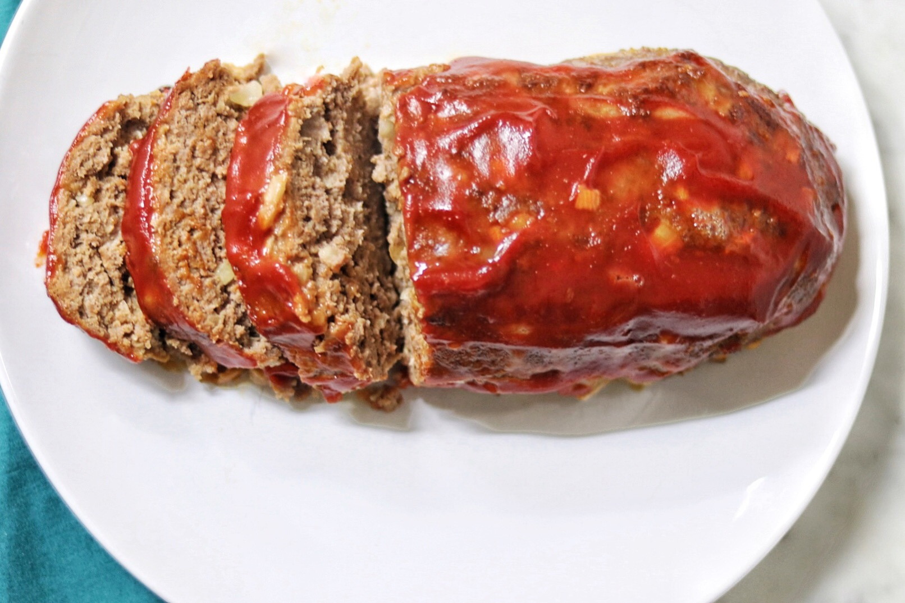

Skinny Meatloaf

A lighter take on a classic recipe. Pair with mashed potatos or broccoli.
- Cooking Spray
- 1 lb extra lean ground beef
- 2 egg whites
- 1/2 cup Italian-seasons bread crumbs
- 1/3 cup finely chopped onion
- 1/3 cup Worcestershire sauce
- 1/4 ketchup, divided
- 1 1/2 tablespoons brown sugar
- 1 teaspoon salt
- 1/4 teaspoon ground black pepper
- Preheat the oven to 350 degrees F (175 degrees C). Spray a loaf pan lightly with cooking spray.
- Combine beef, egg whites, bread crumbs, onion, Worcestershire sauce, 2 tablespoons ketchup, brown sugar,
salt, and pepper in a bowl. Press into the prepared loaf pan.
- Bake in the preheated oven, uncovered, until no longer pink in the center, about 45 minutes. Spread remaining
ketchup over the top and continue baking until ketchup bubbles and thickens, about 15 minutes more.